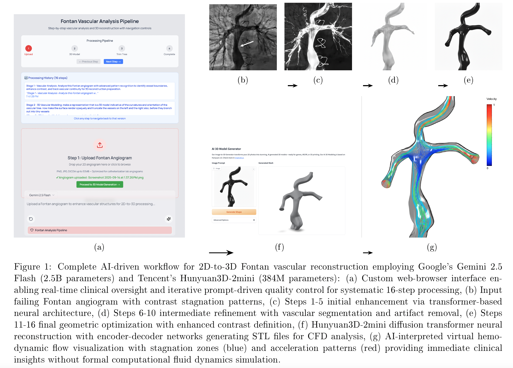
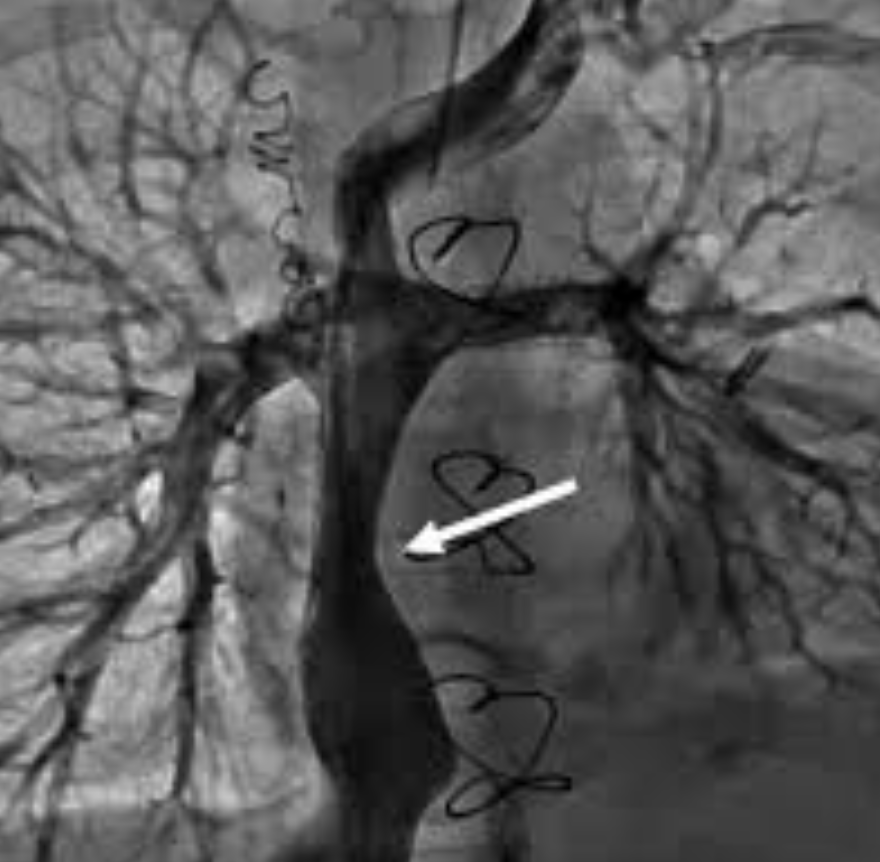
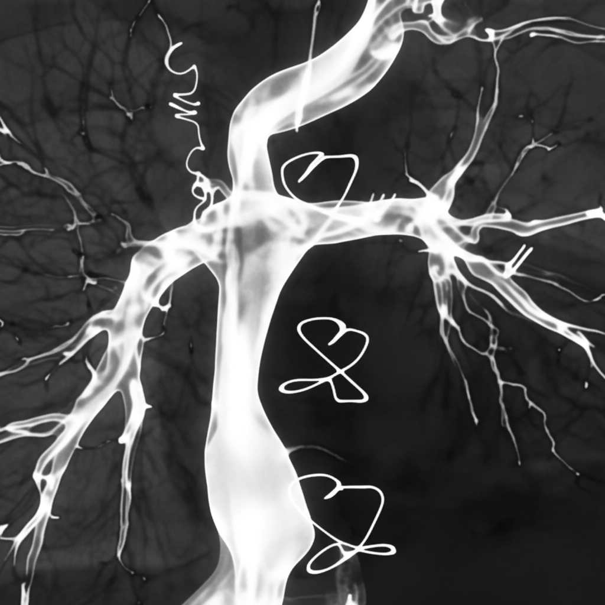
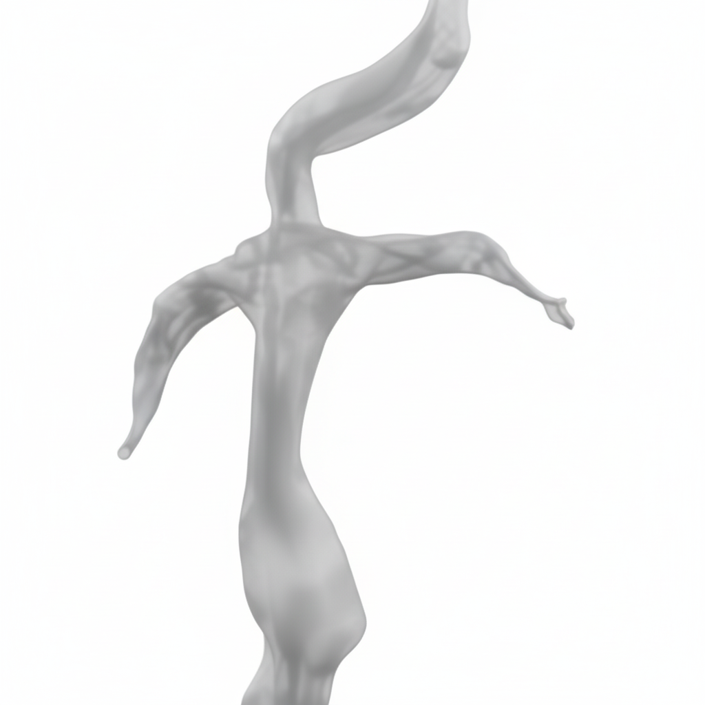
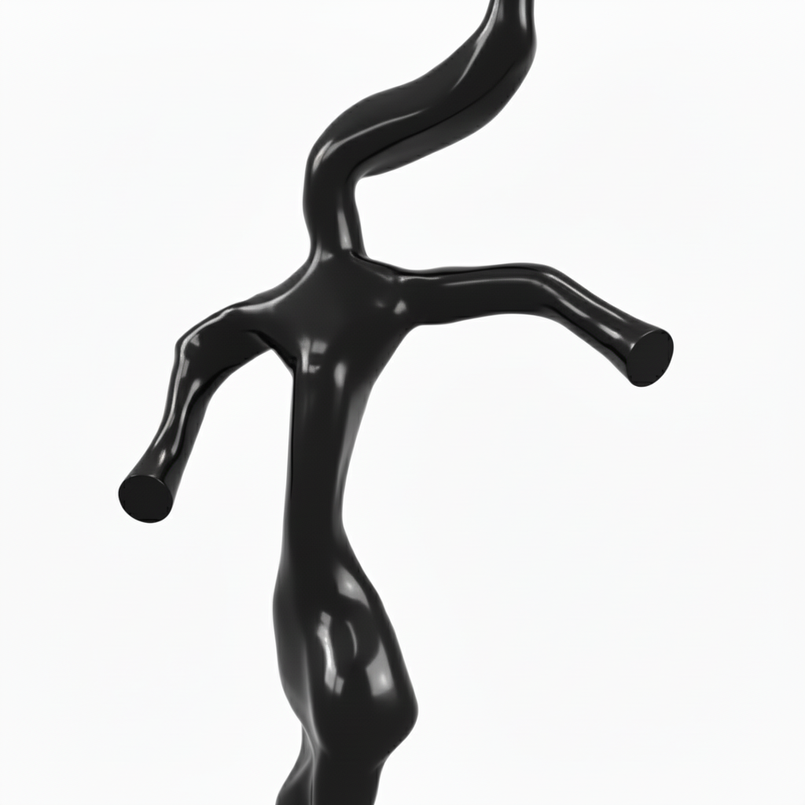
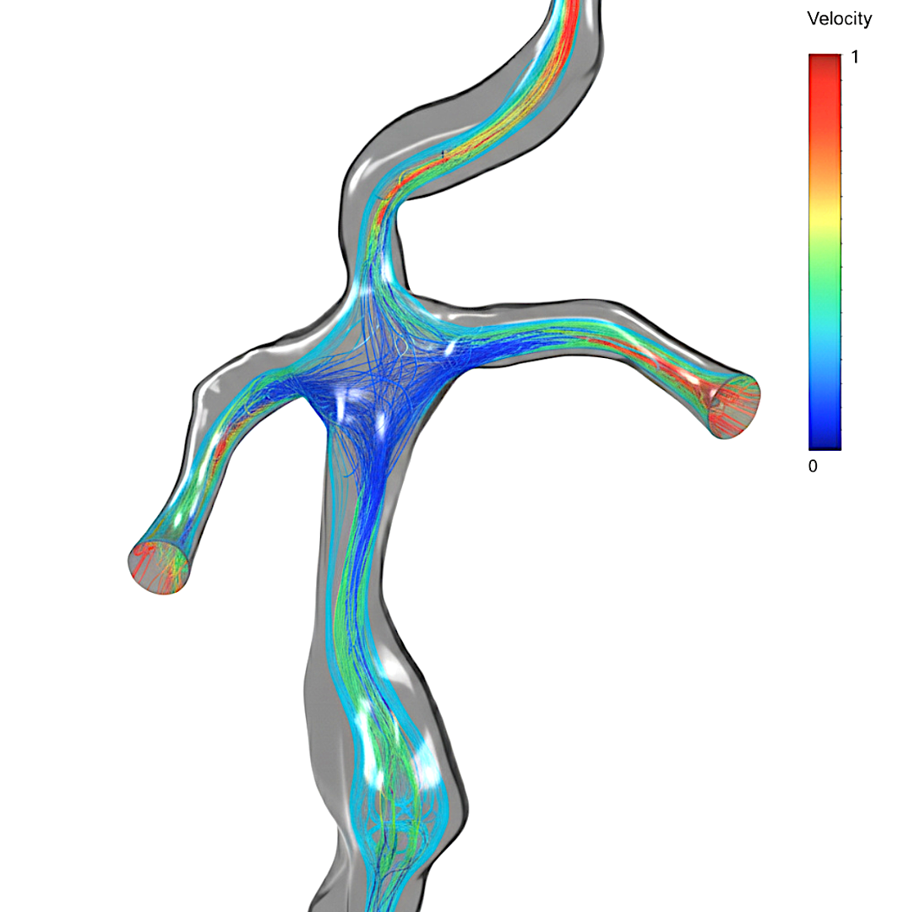
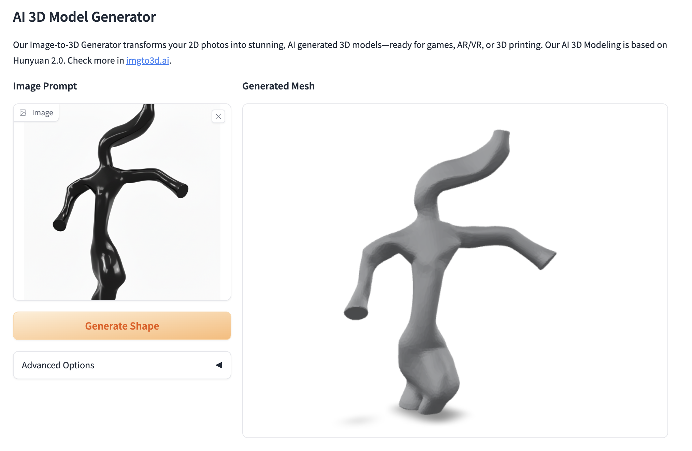
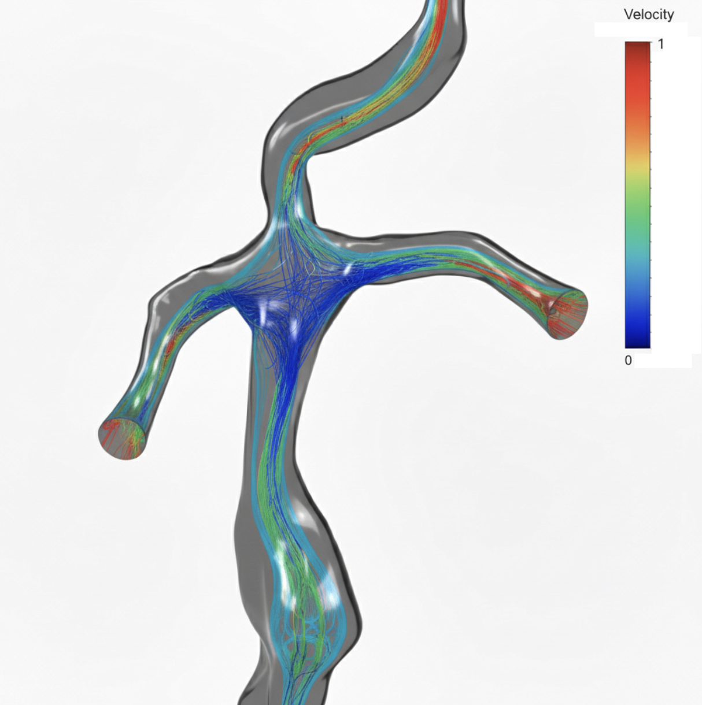
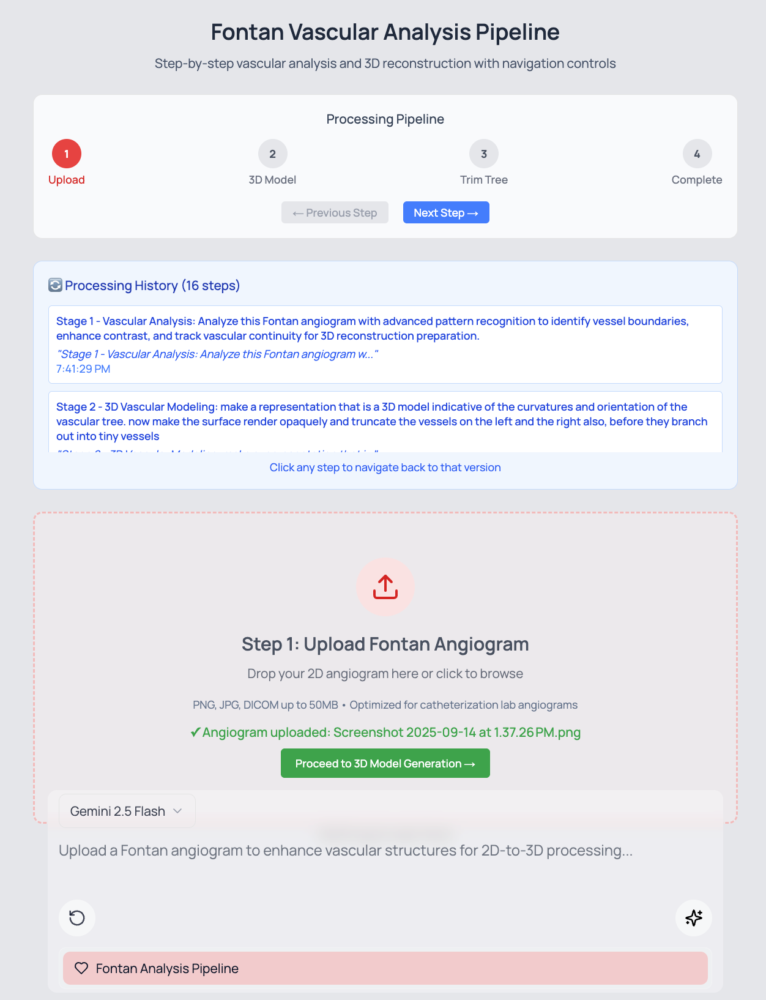

Generative AI Pipeline for 3D Vascular Reconstruction of Fontan Geometries
RF48 · CONGENITAL RAPID FIRE · MAY 4, 2026 · 7:30 AM
Prahlad G. Menon, PhD, PMP · University of Pittsburgh · AATS Quality Gateway
AATS Annual Meeting 2026 · Chicago · Room E451A
AATS Annual Meeting · May 4, 2026 · 7:30 AM · Congenital Rapid Fire Orals · RF48
Generative AI Pipeline for Interactive Prompt-Driven 3D Vascular Reconstruction
Fontan Geometries from Contrast-Enhanced X-Ray Fluoroscopy
Enabling CFD Analysis and Virtual Hemodynamic Visualization
Prahlad G. Menon, PhD, PMP
University of Pittsburgh · AATS Quality Gateway

Objective & Methods
From routine 2D fluoroscopy to CFD-ready 3D geometry.
OBJECTIVE
Develop and validate an AI pipeline transforming routine 2D fluoroscopic angiograms into 3D geometries suitable for geometric and CFD analysis in failing Fontan patients — using only equipment available in any catheterization lab worldwide.
AI MODELS USED
Gemini 2.5 Flash (2.5B params) — Multimodal LLM · transformer + enhanced vision · 16-step iterative vascular enhancement and segmentation
Hunyuan3D-2mini (384M params) — Tencent diffusion transformer · encoder-decoder with attention · 2D projection → STL mesh generation
Veo-3 — Video generation for hemodynamic flow visualization
WHY EXISTING METHODS FAIL
✗Traditional 3D reconstruction requires MRI/CT — often unavailable at time of re-intervention
✗Neonatal/infant structures measured in mm — scanner resolution limits
✗Manual segmentation: days of expert time per case
✗Volumetric meshing + CFD setup: specialized labs only
✓Our pipeline: standard fluoroscopy → CFD mesh in <15 minutes
VALIDATION CASE
Representative failing Fontan angiogram processed through all 16 steps via a custom browser-based interface. Quality control at each step. Anatomical accuracy assessed against clinical features visible in the source angiogram.
Results — The Pipeline
16 iterative AI processing steps. Seconds each. <15 minutes total.

INPUT
2D fluoroscopic angiogram

STEPS 1–5
Contrast enhancement, vessel extraction

STEPS 6–10
Artifact removal, background elimination

STEPS 11–16
Geometric optimization, final projection

FINAL 2D
Optimized vascular projection — 3D-ready
CUSTOM WEB INTERFACE
Browser-based UI shows all 16 step outputs in real time. Surgeon can intervene, regenerate, or accept each step. Prompt-driven — no code required.
HALLUCINATION CONTROL
Initial iterations contain hallucinated vessels — expected behavior. Iterative prompt-driven regeneration cycles remove anatomically implausible features. Quality control at each step.
GEMINI ARCHITECTURE
Transformer-based with enhanced vision: medical image preprocessing → vascular segmentation → contrast enhancement → artifact removal → 3D geometric optimization — all via natural language prompts.
Results — 3D Reconstruction & Flow Visualization
2D optimized projection → Hunyuan3D mesh → CFD streamlines.

HUNYUAN3D-2mini OUTPUT
384M-parameter diffusion transformer converts the optimized 2D projection directly to a watertight STL/OBJ/GLB mesh. Left: refined 2D vascular input. Right: AI-generated 3D Fontan geometry — no CT or MRI required.

VIRTUAL HEMODYNAMIC VISUALIZATION
Velocity-colored streamlines on the reconstructed 3D geometry. Blue = stagnation · Red = high velocity. IVC conduit stagnation zones and bilateral PA flow distribution visible — clinically actionable before full CFD.
KEY RESULTS
- Anatomically accurate 3D geometry from single-view fluoroscopy
- Identified clinically relevant IVC stagnation zones
- STL directly integrable with CFD software
- Total processing: <15 minutes
CLINICAL SIGNIFICANCE
Flow stagnation → hepatopulmonary syndrome risk
PA asymmetry → pulmonary AVMs
Conduit obstruction → elevated Fontan pressures
All now detectable from standard cath lab fluoroscopy.
PA asymmetry → pulmonary AVMs
Conduit obstruction → elevated Fontan pressures
All now detectable from standard cath lab fluoroscopy.
OUTPUT FORMATS
STL · OBJ · GLB
OpenFOAM · ANSYS Fluent · SimVascular · 3D printing · AR overlay
OpenFOAM · ANSYS Fluent · SimVascular · 3D printing · AR overlay
The Interface
Built for clinicians. No coding required.
4-STAGE WORKFLOW
① Upload — Load the fluoroscopic angiogram (PNG/JPG from any cath lab)
② 3D Model — Gemini iteratively processes the image through 16 steps with live preview
③ Trim Tree — Surgeon refines the final geometry, removes artifacts interactively
④ Complete — Download STL/OBJ/GLB · Virtual flow overlay · Processing history logged
CONCLUSIONS
This AI-based approach demonstrates clinical feasibility of generating geometric representations suitable for CFD from routine fluoroscopic angiographic data. Enables 3D geometry generation and rapid virtual flow visualization — offering cursory hemodynamic insights prior to full-scale CFD simulation.
